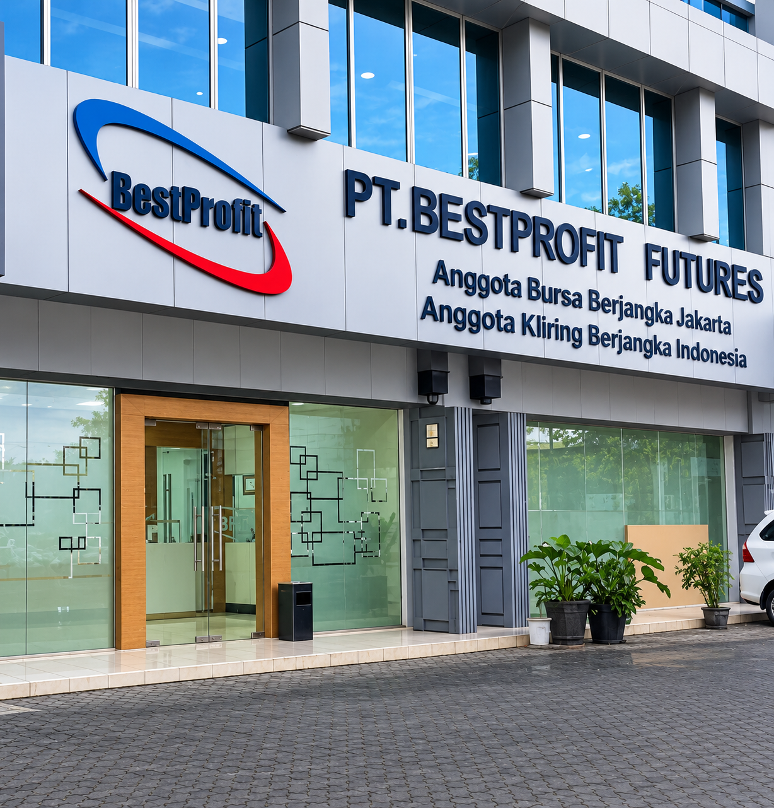

Mengapa Kas Perusahaan & Investor Mapan Membutuhkan Emas Sebagai Aset Lindung Nilai (Safe Haven)?
Mengadopsi Prinsip Gold Standard Sejarah Moneter Dunia untuk Menjaga Stabilitas Arus Kas dan Portofolio di Pasar Komoditas Berjangka (Loco London / XUL10)
Ringkasan Eksekutif:
Dalam dunia bisnis dan investasi modern, menjaga ketahanan arus kas (cash flow) dari gerusan inflasi dan fluktuasi nilai tukar adalah hal yang vital. Artikel ini mengulas sejarah jaminan emas moneter serta mekanisme perdagangan komoditas berjangka resmi Bappebti sebagai instrumen lindung nilai (hedging).
1. Pembelajaran dari Sejarah Moneter: The Gold Standard
Sebelum era uang kertas modern (fiat money), negara-negara di dunia menerapkan sistem Gold Standard, di mana setiap lembar uang yang dicetak wajib dijamin oleh cadangan emas fisik di brankas bank sentral. Hal ini dilakukan karena emas merupakan satu-satunya aset riil yang nilainya diakui secara global, tahan terhadap inflasi, dan tidak dapat dibeli atau dimanipulasi oleh krisis politik.
Prinsip sejarah ini kini banyak diadopsi oleh pemilik bisnis (corporate treasury) dan investor mapan (surplus fund Rp100 juta ke atas). Menyimpan seluruh cadangan kas hanya dalam mata uang tunai memiliki risiko penurunan daya beli secara bertahap. Pengalokasian dana ke aset emas berfungsi sebagai benteng pertahanan utama arus kas perusahaan.
2. Keunggulan Kontrak Berjangka Emas (Loco London / XUL10)
Memegang emas batangan fisik memiliki keterbatasan dalam hal biaya penyimpanan brankas yang besar dan ketidakmampuan menghasilkan keuntungan saat harga pasar turun. Sebaliknya, perdagangan komoditas emas berjangka resmi menawarkan efisiensi tinggi:
- Peluang Dua Arah (Two-Way Opportunity): Investor dan perusahaan dapat meraih potensi profit baik saat harga emas dunia naik (buy/long) maupun saat terjadi koreksi turun (sell/short). Fleksibilitas ini sangat krusial untuk kegiatan hedging.
- Likuiditas Tinggi & Efisiensi Modal: Transaksi dapat disesuaikan secara cepat sesuai dinamika pasar tanpa kendala alur pengiriman fisik.
3. Keamanan Dana Terjamin: Segregated Account di KBI & Bappebti
Sesuai Peraturan Badan Pengawas Perdagangan Berjangka Komoditi (Bappebti), keamanan modal nasabah dilindungi secara ketat oleh hukum:
- 100% Dana Transaksi Wajib di Rekening Terpisah (Segregated Account): Seluruh dana nasabah disimpan di Bank Penyimpanan Resmi (seperti BCA, Mandiri, BNI, CCB) dan dipisahkan penuh dari rekening operasional pialang.
- Pengawasan Kliring (PT KBI): Rekening terpisah ini diverifikasi dan diawasi langsung oleh Lembaga Kliring Berjangka (PT Kliring Berjangka Indonesia / KBI).
4. Ringkasan Praktis: Harga vs Fisik, 2 Rekening, Simulasi & Kendali Mandiri
Agar calon peserta memiliki gambaran operasional yang utuh sejak awal, perhatikan empat poin utama dalam perdagangan kontrak harga emas ini:
- Perdagangan Harga Emas (Bukan Fisik): Yang ditransaksikan adalah pergerakan harga kontrak emas, bukan penyerahan fisik emas batangan.
- Wajib 2 Rekening Terpisah: Nasabah wajib menyiapkan Rekening Pribadi (tujuan penarikan keuntungan dari rekening dagang) dan Rekening Dagang terpisah (khusus untuk bertransaksi di pasar).
- Acuan 1 Lot = Rp1 Juta & Simulasi Potongan: Dengan ukuran acuan 1 lot/batang = Rp1.000.000, setiap penyelesaian transaksi memiliki potongan—misalnya komisi Rp300.000 + PPN 11% (Rp33.000) = Rp333.000 per unit. Sebagai ilustrasi edukatif (bukan jaminan hasil): profit 2 poin × Rp1.000.000 × 3 unit = Rp6.000.000 kotor; setelah potongan 3 × Rp333.000 = Rp999.000, hasil bersihnya (net) menjadi Rp5.001.000.
- Kendali Dana & Ketajaman Nasabah: Setelah akun aktif, pemilik uang sendiri yang melakukan trading dan mengendalikan dananya, sehingga wajib berhati-hati, tajam membaca situasi, serta disiplin mengelola risiko. Pialang hanya memberikan arahan.
📈 Pantauan Grafik Pergerakan Harga Emas
Grafik interaktif berikut membantu memantau arah pergerakan harga emas global sebagai referensi bacaan pasar sebelum mengambil keputusan mandiri:
*Catatan: Grafik di atas merupakan widget pantauan pergerakan harga emas pasar global (zona waktu WIB) sebagai alat bantu visual edukatif, bukan acuan eksekusi otomatis maupun jaminan hasil transaksi.
Catatan & Disclaimer: Simulasi di atas bersifat ilustrasi edukatif dan bukan jaminan profit. Seluruh keputusan serta risiko transaksi berada pada pemilik dana yang menjalankan trading sendiri; pialang berperan memberi arahan dan informasi. Jika sudah memahami poin-poin ini dan ingin berdiskusi lebih lanjut, silakan hubungi Kresnawan Sasmita Putra melalui WhatsApp di 👉 WhatsApp ( INFO EMAS BPF).
🛡️ Legalitas Resmi PT BestProfit Futures (BPF)

Gedung Kantor PT BestProfit Futures Cabang Medan (Komplek Grand Jati Junction)
- • Izin Pialang Berjangka Bappebti: No. 499/BAPPEBTI/SI/X/2004
- • Izin SPA Bappebti: No. 1157/BAPPEBTI/SP/3/2007
- • Anggota Bursa Berjangka Jakarta (BBJ): No. SPAB-071/BBJ/05/04
- • Anggota Kliring Berjangka Indonesia (KBI): No. 48/AK-KBI/I/2007
- ✅ Cek Fatwa DSN-MUI No. 82, di Parameter Komoditi Syariah, Klik 👇: bappebti.go.id/artikel/detail/129
*Keaslian legalitas dapat diverifikasi mandiri kapan saja melalui situs resmi Bappebti.
🎥 Kajian Video Edukasi Singkat
Simak ulasan visual ringkas mengenai mekanisme peluang emas komoditas dan transparansi rekening terpisah melalui tayangan video di bawah ini:
Layanan Edukasi & Konsultasi Portofolio Emas
Untuk pemetaan risiko, simulasi transaksi, atau janji temu konsultasi tatap muka (didampingi tim konsultan senior) di kantor operasional kami:
👤 Konsultan Hubungan Nasabah: Kresnawan Sasmita Putra
🏢 Perusahaan Pialang: PT BestProfit Futures (BPF) Cabang Medan
📍 Alamat Kantor: Jl. Perintis Kemerdekaan, Komplek Grand Jati Junction No. P9A-P10A, Medan
telp: 061-80501610
fax : 061-80501699
📧 Email konsultan: kresnawansp@gmail.com
Disclaimer: Perdagangan Berjangka Komoditi merupakan aktivitas investasi yang memiliki potensi keuntungan tinggi dan risiko tinggi (high risk, high return). Pelajari mekanisme pasar dan risikonya secara bijak sebelum bertransaksi.